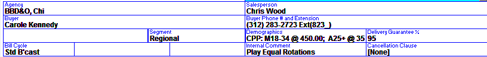
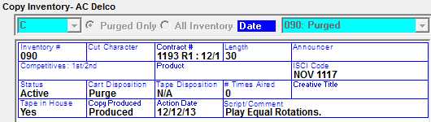

Wegener iPump
The Wegener iPump System is an Audio delivery system that controls station receivers and uplinks. The Counterpoint Affiliate System produces a playlist file for each station.
Traffic Setup
Site Options -> Automation
Activate “Wegener-iPump” by checking the option on and enter the Export’s Time Zone in “Export Time Zone” field. You will need a password from counterpoint support to enable this feature.
Site Options -> Options
Turn on vCreative (if applicable). You will need a password from counterpoint support to do so.
Lists -> Media Definitions
There are additional fields in the Media Definitions Screen to be filled in for iPump.
- Prefix- This two character code setting is added to the start of the Cart #
- Example Layout: SP7965.MP3
- Suffix- This two character code setting is added to the end of the Cart #
- Example Layout: SP7965.MP3
- Event Type- This is two character code is added in front of the Network ID
- PL (Play List)- Is the typical Media Code Event Type used with iPump
- NC (Network Cover)- There are times when the vehicle spot ‘event type’ should not default to PL. For example, a station in Denver airs network spots, but will not air the live feed (from Scott Automation System), instead the network commercials will be retrieved from the iPump folder. The spots for this vehicle are identified with the Media Code Override NC
- Example Layout: PLA1120913TH0611
- Network ID- This two character code follows the Event Type Code
- Example Layout: PLA1120913TH0611
- Name Space- This is a 60 Characters folder location name. Note: The path should end with a slash
- Whenever the folder location is changed, it takes effect immediately for all future exports.
- Example: C:\CSI\PROD\EXPORT\
Vehicle Options -> Export tab
Check on Wegener-iPump for any applicable vehicle, and enter the Media Code Override.
If an override is defined, the vehicle will not show in the Vehicle list box during the Export. If a vehicle is selected to export that has a station affiliated to it that is also affiliated to a vehicle with a defined override, the override will export for that vehicle.
Affiliate Setup
Stations -> Interface
Enter the iPump ID, provided by Wegener, in the “Wegener iPump ID” field on the Stations screen Interface tab.
Agreements -> Delivery
Indicate Wegener-iPump is the Delivery Service for each Wegener agreement.
Contract Entry
In the Order Screen, enter an internal comment in the contract header. The comment will be copied into the Copy Inventory Script/Comment field if the contract number is entered into the Copy Inventory screen.

Copy Entry
The Copy Inventory Screen has fields that must be filled out in conjunction with ending copy to/from the vCreative system.

- Copy Produced: Is a toggle with options: Not Sent, Produced, Sent, and Hold. These will be displayed on the Copy Inventory by Producer report
- Action Date: Date Copy inventory was sent to vCreative or Date copy was retrieved from vCreative
- Script/Comment: When you enter the contract number (of a contract that has internal comments entered), that contract’s internal comments will populate in the Scripts field
Running the Export
In the Affiliate System, go to File -> Export -> Wegener iPump.
- Enter the Start Date (can be today’s date)
- Enter the number of Days to Export
- Select Generate Facts File, if you want to create a verification file
- Select the Vehicle(s) to export
- If only one Vehicle is selected, then list of its stations will be displayed.
- Select the station(s) to be exported
- Only those vehicle specified as Export in Vehicle Option Export tab will be displayed
Export Verification
Example iPump Facts Log
The contents of the iPump Facts Log (iPumpFactsLog_mm-dd-yy.txt) show each station playlist and what spots were exported. The file is stored in the CSI\Prod\Export folder.
For each spot on each station and vehicle, the following information will appear: advertiser, ISCI, date, time, export time adjustment, whether daylight savings time adjustment is used, and astCode (internal affiliate spot code).
11/10/2012 3:32:15 PM iPump export for 11/12/2012, 7 days.
STATION KAAA-FM
VECHICLE George Carlin
US Postal Service USPO-123 11/12/12 15:20 Time adjusted:-3 Daylight a factor?:False astcode: 7039
US Air Force USAF-123 11/12/12 15:30 Time adjusted:-3 Daylight a factor?:False astcode: 7040
Ticketmaster TMT-1874-X9 11/12/12 15:30 Time adjusted:-3 Daylight a factor?:False astcode: 7041
Walmart WMT048234 11/12/12 16:20 Time adjusted:-3 Daylight a factor?:False astcode: 7042
iPump Export Log
The iPump Export log shows you the user name and any messages that were created during the export. To see the Export Log, select Accessories>Messages. Scroll to the Wegener iPump Logs and select the txt file for the date you exported. The messages will be displayed, you have the option to print or email.
Export File
When the export is generated, one file is created per station with the Play List and the Delete Play List instructions.
- Play List- List of spots within a Break to Air
- The filename is: [(iPump ID)_(yyy)(mm)(dd).weg]
Sample output:
- AFT022 STORAGE PLAYLISTDEF PLA1120913TH0611, description, 0,2,/assets/LA1_X/SP0936.WAV;
- AFT022- iPump Station ID obtained from the station Interface tab
- Storage- Hard Coded
- PlayListDef- Hard Coded
- PLA1120913TH0611- PL- Media code Event Type, A1- Media code Network ID, 120913- date (mmddyy), TH- Day, 0 (zero) is the Hour number starting from zero, 1 is always 1 (Half hour window), 1- is the break number (1)
Description- Internal Spot ID separated by vertical bar - Unused: Hard coded zero
- Number of spots in break
- Assets/LA1_X - Name Space obtained from the Media Code
- SP0936.WAV - Audio File name obtained from Copy Inventory
- Spots are separated by a “;”
- Delete Play List- List of spots previously exported to be removed
Sample output:
- AFT022 STORAGE DELPLAYLIST PLA1120913TH0621
- AFT022- iPump Station ID obtained from the station Interface tab
- Storage- Hard Coded
- DelListDef- Hard Coded
- PL- Media Definition Event Type
- A1- Media Definition Network ID
- 120913- Date (mmddyy)
- TH - Day
- 0-Hour number starting from zero
- 1-Always 1 (Half hour window)
- Break Number
The files are stored in the Export folder defined in affiliat.ini.